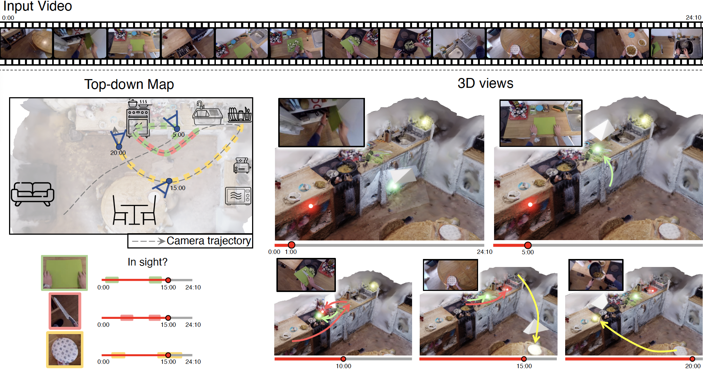
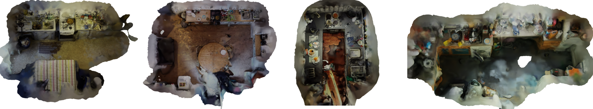
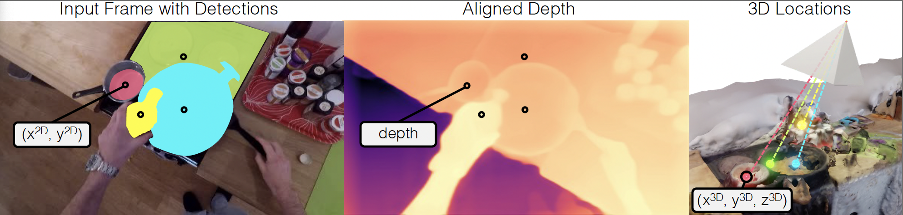

Motivation: As humans move around, performing their daily tasks, they
are able to recall where they have positioned objects in their environment, even if these objects are currently out of sight. In this paper, we
aim to mimic this spatial cognition ability. We thus formulate the task of Out of Sight, Not Out of Mind – 3D tracking active objects using
observations captured through an egocentric camera.

Fig: Spatial Cognition. From an egocentric video (top), we propose the task Out
of Sight, Not Out of Mind, where the 3D locations of all active objects are known
when they are both in- and out-of-sight. We show a 24 mins video and demonstrate
how solving this task enables tracking 3 active objects through the video in the world
coordinate frame – from a top-view down with camera motion (left top); identifying
when they are in-sight (left bottom); their trajectory from a side view at five different
frames (right). Neon balls show the 3D locations of these objects over time along with
the camera (white prism), corresponding frame (inset) and object location change
(coloured arrow). The chopping board> is picked from a lower cupboard (1:00) and is
in-hand at 05:00. The knife is picked up from the drawer (after 05:00), while in use
(10:00) until it is discarded in the sink (before 15:00). The plate travels from the drainer
to the table (15:00), then back to the counter (20:00).
Abstract: As humans move around, performing their daily tasks, they
are able to recall where they have positioned objects in their environ-
ment, even if these objects are currently out of sight. In this paper, we
aim to mimic this spatial cognition ability. We thus formulate the task
of Out of Sight, Not Out of Mind – 3D tracking active objects using
observations captured through an egocentric camera. We introduce Lift,
Match and Keep (LMK), a method which lifts partial 2D observations
to 3D world coordinates, matches them over time using visual appear-
ance, 3D location and interactions to form object tracks, and keeps
these object tracks even when they go out-of-view of the camera – hence
keeping in mind what is out of sight. We test LMK on 100 long videos
from EPIC-KITCHENS. Our results demonstrate that spatial cognition
is critical for correctly locating objects over short and long time scales.
E.g., for one long egocentric video, we estimate the 3D location of 50
active objects. Of these, 60% can be correctly positioned in 3D after 2
minutes of leaving the camera view.
3D Scene Representation
We produce scene geometry for 100 videos from EPIC-KITCHENS-100. Those are 3D mesh extracted using a classical Multi-View Stereopsis pipeline that runs patch matching to find dense correspondences
between stereo image pairs, triangulates the correspondences to estimate depth,
and fuses them together into a dense 3D point cloud with surface normals.

Method - Lift, Match and Keep (LMK)
We call our method Lift, Match, and Keep (LMK). It operates by first lifting 2D observations of objects to 3D, matching them over time, and keeping objects in memory when they are out-of-sight.
Lifting We utilise the centroids of object masks as 2D locations and sample the corresponding depths from the mesh-aligned monocular depth estimate. The 3D object locations in world coordinates are computed by unprojecting the mask's centroid using the estimated camera pose.
Match Objects are tracked in 3D by matching visual and locational features. This process assigns each object to a consistent track.
Keep Upon the first observation of an object, the track is extrapolated back to the beginning of the video, embodying the common sense understanding that objects do not suddenly materialize from nowhere. If a track does not receive a new observation, its representation is kept unchanged, maintaining the premise that if an object is not observed moving, its location is assumed to be static.

LMK visualisation
We show the mesh of the environment, along with coloured neon dots representing the active objects we lift and track in 3D.
The videos also show the estimated camera position and direction throughout the video along with the corresponding egocentric footage.
In each case, the clip shows object locations predicted when they are in-sight, when they are out-of-view as well as when they are moving in-hand. Selected examples also show objects picked up / returned to fridge or cupboard highlighting the complexity of spatial cognition from egocentric videos.
Bibtex
@inproceedings{Plizzari2023,
title={Spatial Cognition from Egocentric Video:
Out of Sight, Not Out of Mind},
author={Plizzari, Chiara and Goel, Shubham and Perrett, Toby and Chalk, Jacob and Kanazawa, Angjoo and Damen, Dima},
booktitle={ArXiv},
year={2024}
}
Acknowledgements
Research at Bristol is supported by
EPSRC Fellowship UMPIRE (EP/T004991/1) and EPSRC
Program Grant Visual AI (EP/T028572/1). We particularly
thank Jitendra Malik for early discussions and insights on this work. We also
thank members of the BAIR community for helpful discussions.
This project acknowledges the use of University of Bristol’s Blue Crystal 4
(BC4) HPC facilities.